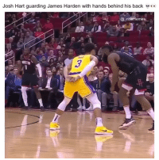

James Harden's relevant offensive stats this season after 5 games (on a per game basis):
James Harden's relevant offensive stats in his last full season in Houston (2019-2020 season):
James Harden, a one-time MVP and three-time scoring-title winner in the NBA, is widely regarded as one of the best offensive players that we have ever seen. Harden can do everything from shooting the ball from three-point land and throwing dazzling passes to his teammates. However, Harden looks like a shell of his past self this season. As seen from the stats above, James Harden is not only averaging a lowly 16.6 points per game this season, but his free throw attempts have decreased from a whopping 11.8 to only 3 a game. The new changes in the foul rules have arguably affected James Harden the most as during the peak of his foul-baiting abilities, players had to literally defend him with their arms behind their back as evidenced in the picture below.
Now that Harden is not getting as many foul calls, his ppg have dipped considerably. At the end of the day, James Harden is a premier passer and rebounder, but the question that all have to ask is this: Is this just a regression from the mean, or are we in a Wizard of Oz situation? In the Wizard of Oz, Dorothy uncovers the veil just to realize that the supreme wizard is just a normal man behind smoke and mirrors. Is James Harden just an above average offensive player without the free throws? Or can we expect him to return to being an offensive juggernaut once he figures out that he needs to finish more rather than baiting fouls?